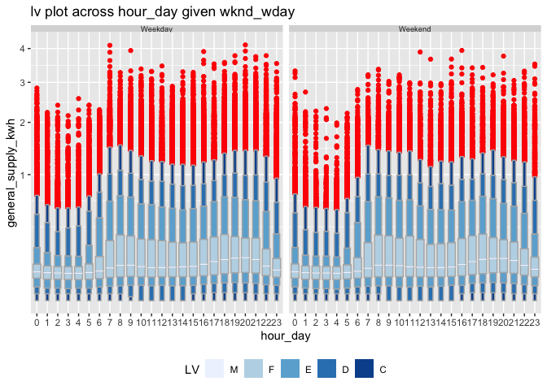

Overview
The package gravitas provides a tool to examine the probability distribution of univariate time series across bivariate temporal granularities using range of graphics in ggplot2 through the following:
create multiple-order-up circular or aperiodic temporal granularities.
categorize pairs of granularities as either harmony or clash, where harmonies are pairs of granularities that aid exploratory data analysis, and clashes are pairs that are incompatible with each other for exploratory analysis.
recommending appropriate probability distribution plots of the time series variable across the bivariate granularities based on the levels of the bivariate granularties and their interaction.
Installation
You can install gravitas from CRAN:
You can install the development version from GitHub with:
Quick look
gravitas comes with an interactive webpage, which lets you go through the different functionalities of this package. To try it, simply use gravitas::run_app().
Features
Search for a set of all possible temporal granularities with
search_granBuild any temporal granularity with
create_granRefine your search of possible temporal granularities by altering arguments in
search_gran()Check if two temporal granularities are harmonies with
is_harmony()Get all possible harmonies with
harmony()Get recommendations on choosing more appropriate distribution plots and advice on interaction between granularities, number of observations available for drawing probability distributions for chosen granularities with
gran_adviceExplore probability distribution across bivariate temporal granularities with
prob_plot()
Example
The probability distribution of the energy consumption for one household from customer trials across weekend/weekday and half-hours of the day can be examined through a quantile plot or letter value plot.
library(gravitas)
library(dplyr)
#> Warning: package 'dplyr' was built under R version 3.5.2
library(ggplot2)
#> Warning: package 'ggplot2' was built under R version 3.5.2
library(tsibble)
#> Warning: package 'tsibble' was built under R version 3.5.2
smart_meter <- sm_cust1 %>% as_tsibble() %>% ungroup()
smart_meter %>%
prob_plot(gran1 = "wknd_wday",
gran2 = "hour_day",
response = "general_supply_kwh",
plot_type = "quantile",
quantile_prob = c(0.1, 0.25, 0.5, 0.75, 0.9)) +
scale_y_sqrt()
#> Warning in gran_warn(.data, gran1, gran2, hierarchy_tbl = hierarchy_tbl, : Number of observations for few combinations of
#> granularities vary within or across facets.
#> Use gran_obs() to find combinations which have low
#> observations or very different number of observations.
library(gravitas)
smart_meter %>%
prob_plot("wknd_wday",
"hour_day",
response = "general_supply_kwh",
plot_type = "lv",
outlier.colour = "red") + scale_y_sqrt()
#> Warning in gran_warn(.data, gran1, gran2, hierarchy_tbl = hierarchy_tbl, : Number of observations for few combinations of
#> granularities vary within or across facets.
#> Use gran_obs() to find combinations which have low
#> observations or very different number of observations.
More information
View the vignette to get started!
library("gravitas")
vignette("gravitas_vignette")
#> Warning: vignette 'gravitas_vignette' not foundThis package takes tsibble as the data input. Tsibble provides a data class of tbl_ts to represent tidy temporal data. It consists of a time index, key and other measured variables in a data-centric format, which makes it easier to work with temporal data. To learn more about it, please visit https://tsibble.tidyverts.org/
Reporting and issues
Please submit all bug reports, errors, and feature requests to https://github.com/Sayani07/gravitas/issues